Kamigori, Hyogo: things to do, food and stays
Kamigori · Hyogo
Kamigori
Highlighted on the Hyogo map.
Stay
上郡ピュアランド山の里
Kamigori Pyuarando Yama No Sato
Dining
かなじ屋
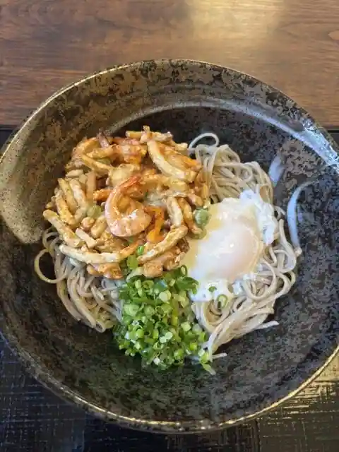
Kanaji Ya
末廣堂 光都苑
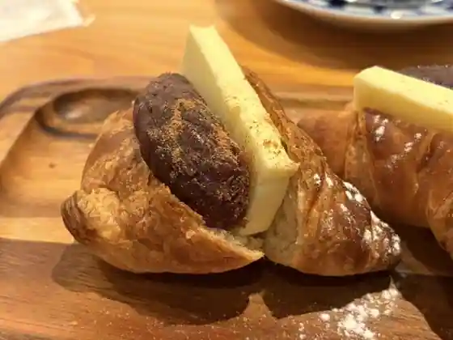
Suehiro Do Hikari Miyako En
手打うどん葵
Teuchi Udon Aoi
MERRY WIDOW
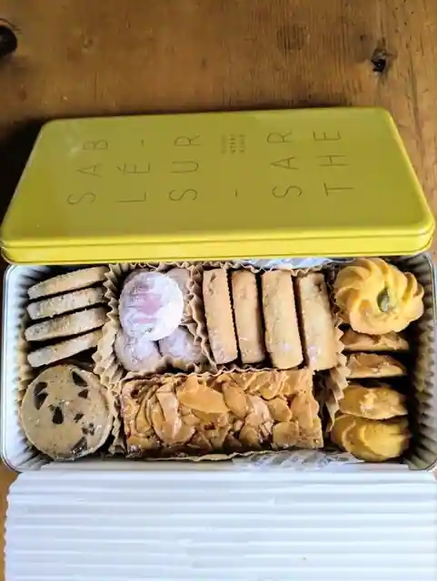
MERRY WIDOW
食事処 やぶ
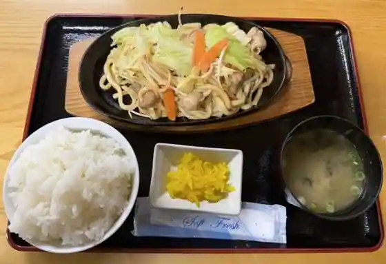
Shokuji Tokoro Yabu
ヨット
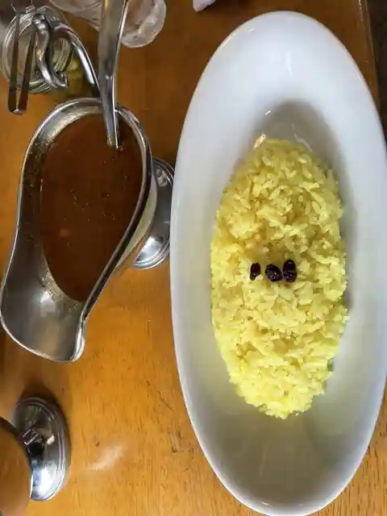
Yotto
hanaテラス FARMER'S RESTAURANT
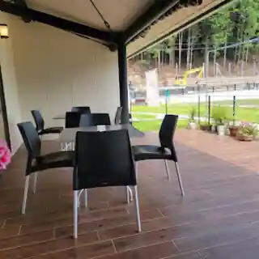
hana Terrace FARMER'S RESTAURANT
淡路島バーガー ＃93上郡駅前店
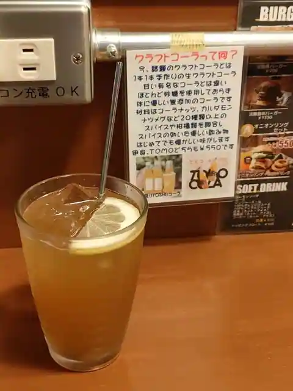
Awaji Shima Burger #93 Kamigori Ekimae
FUKUTEI
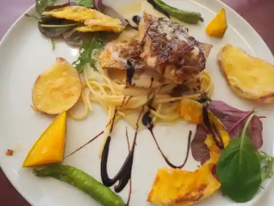
FUKUTEI
パスタ & ピッツア レガーミ
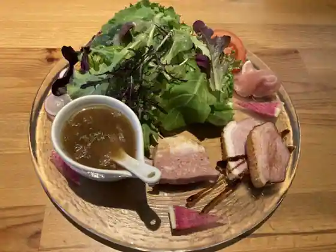
Pasta & Pittsua Regami
松の木屋 幸
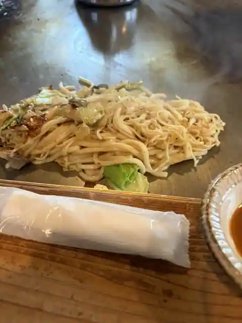
Matsu No Kiya Sachi
ネオ大衆 ヒノマルケン食堂
Neo Taishu Hinomaruken Shokudo
ベーカリー コネル
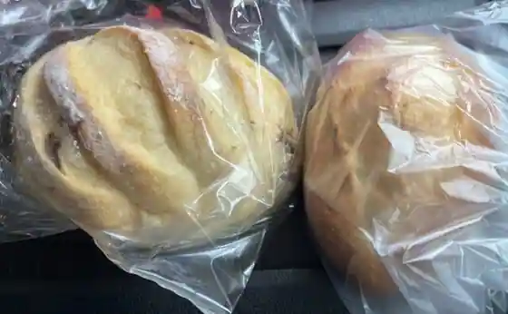
Bakery Koneru
豊源
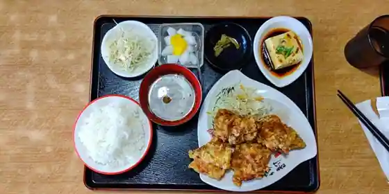
Yutaka Gen
ラーク
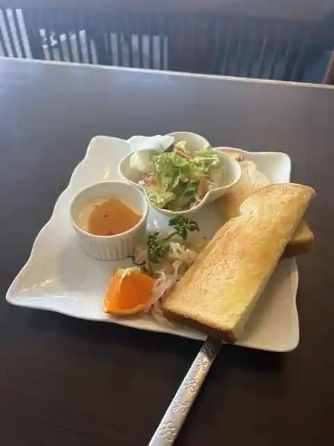
Raku
はりまくらぶ
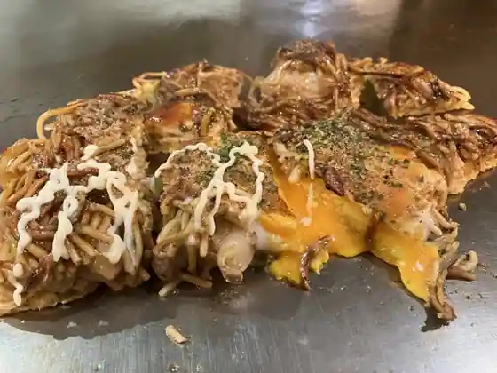
Harimakurabu
御菓子司 大黒屋丹治 上郡店
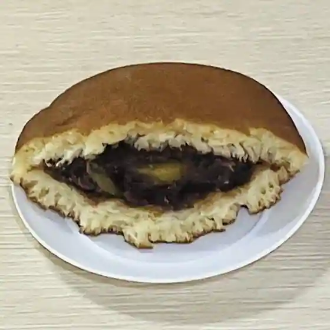
O Kashi Tsukasa Daikokuya Tanji Kamigori
お好み焼たまちゃん
O Konomi Yaki Tamachan
司庵
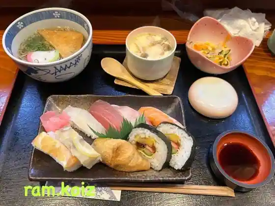
Tsukasa Iori
陶酔房
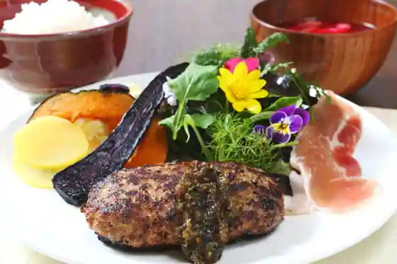
Tosui Bo
STICK
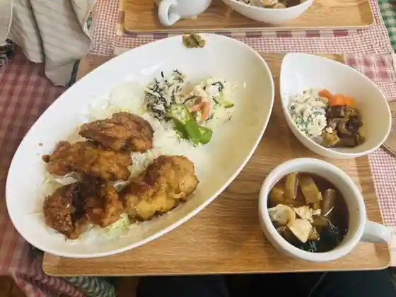
STICK
お好み焼大蔵 与井店
O Konomi Yaki Okura Yo I
カフェ モリンガの里
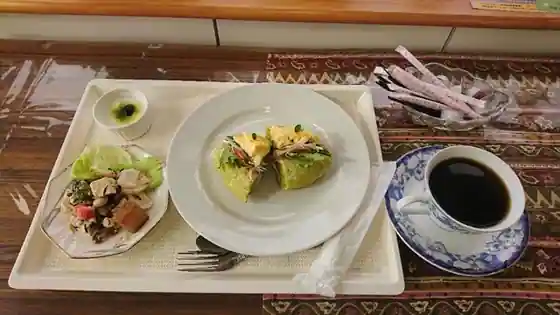
Cafe Moringa No Sato
キッチン 蓮
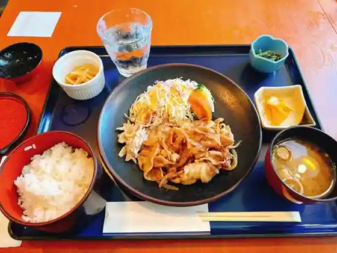
Kitchen Hasu